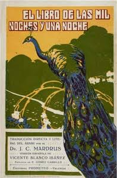

Las mil y una noches
Relato: Historia encantadora de los animales y de las aves

Ilustración de portada
Ficha del cuento
- Nombre original: Hikāyat al-tuyūr wa-l-wuhūsh
- Nombre en español: Historia encantadora de los animales y de las aves
- Autor: Anónimo
- Año: Siglos IX al XIV
- Publicado en: Las mil y una noches
- Género: Fábula, apólogo, cuento tradicional y literatura didáctica
- Tema: La sabiduría y astucia de los animales frente a la crueldad e ingratitud del ser humano, el valor de la amistad y la prudencia ante el engaño.
- Idioma: Árabe
Escucha la reseña
Toda la información de esta página, narrada en audio.
Personajes principales
Al tratarse de un ciclo de fábulas enlazadas, los protagonistas van rotando a medida que los animales se cuentan historias entre sí para darse consejos.
El pavo real y la pava real
Una pareja de aves que vive en una isla paradisíaca y huye por temor a la maldad de los seres humanos.
La oca
Un ave asustada que llega a la isla tras tener una pesadilla sobre el peligro que representan los "hijos de Adán" (los humanos).
El león y su cachorro
El joven león desoye las advertencias de su padre sobre la astucia del hombre y termina siendo engañado y atrapado por un carpintero.
El zorro y el lobo
Dos animales que hacen un pacto; el lobo actúa con tiranía y codicia, mientras que el zorro usa su inteligencia para hacerlo caer en la trampa de un viñador.
El ratón y la comadreja
Protagonistas de una fábula sobre la avaricia y cómo el exceso de codicia termina destruyendo a quien intenta robar lo ajeno.
El cuervo y el gato de algalia
Dos amigos leales que demuestran el valor de la solidaridad y la ayuda mutua frente a las adversidades.
Resumen
La historia comienza en una isla pacífica donde habitan un pavo real y su esposa. Un día llega una oca despavorida asegurando que ha tenido una revelación en sueños sobre lo crueles y peligrosos que son los seres humanos. Para comprobar si es cierto, los animales escuchan y comparten distintas experiencias y relatos sobre el trato con los hombres.
En una de las historias centrales, un joven león decide buscar al ser humano creyendo que su fuerza física lo hace invencible; sin embargo, se topa con un astuto carpintero que, mediante engaños, logra encerrarlo en una caja de madera y quemarlo. A lo largo de las noches, los animales siguen enlazando otras fábulas (como la del zorro que vence al lobo abusivo o la del cuervo fiel a su amigo) para reflexionar sobre la naturaleza del poder, la traición y la supervivencia en el mundo.
3 enseñanzas del cuento
-
La inteligencia supera a la fuerza bruta.
Como demuestra el carpintero frente al león o el zorro frente al lobo, la astucia, la paciencia y la estrategia son mucho más efectivas que la fuerza física o la intimidación.
-
La codicia y la tiranía llevan a la propia ruina.
Personajes como el lobo abusivo o la comadreja avara terminan destruidos por sus propias trampas y ambiciones desmedidas.
-
El valor de la prudencia y la verdadera amistad.
Escuchar los consejos de los más experimentados evita caer en peligros mortales, mientras que la lealtad entre amigos genuinos (como el cuervo y el gato de algalia) permite superar cualquier crisis.
Ilustraciones de la obra
 El pavo real y la oca en la isla
El pavo real y la oca en la isla
 El joven león y el carpintero
El joven león y el carpintero
 El zorro y el lobo
El zorro y el lobo
Dónde conseguir el libro
Este relato se encuentra dentro de las ediciones completas o antologías amplias de Las mil y una noches